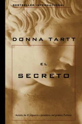

Libros que te atrapan desde el inicio
Inicio
Introduccion
libro
imagen
correo
mas informacion
El Secreto de Donna Tartt

Este libro no anda con rodeos: en el mismo prólogo, no solo sabemos quien ha muerto, sino que también quien lo ha hecho , sino que también quien lo ha hecho. A pesar de esto, El Secreto atrapa de todas formas porque en su esencia no se trata de una típica historia de asesinato, y mucho menos de un libro de detectives.
Contenido del libro
Donna Tartt nos cuenta la historia de Richard, un joven que cambia de universidad para ir a estudiar al prestigioso (y ficcional) Hampden College, tomando clases ni más ni menos que en el exclusivo grupo de estudiantes de un profesor de los clásicos grecolatinos
un tanto peculiar.
Donna Tartt

Personajes principales del libro
- Camilla Macauley Estudiante, hermano mellizo de Charles
- Charles Macauley Estudiante, hermano mellizo de Camilla
- Edmund "Bunny" Corcoran Estudiante asesinado
- Francis Abernathy Estudiante cuya casa de campo se convierte en el santuario del grupo
- Henry Winter Estudiante y genio lingüístico
- Judy Poovey Estudiante con problemas con las drogas
- Julian Morrow Profesor carismático y esnob
- Richard Papen Estudiante y narrador de la historia
¿Cuáles son los temas principales?
- Crimen
- Amistad
- Excesos
- Clases sociales
- Adolecencia

Otros libros De Misterio:
>
escritos por Donna Tartt
- El jilguero (2013)
- Juego de niños (2002)
- otros libros similares
- Las uvas de la ira (1939)
- Nunca me abandones (2005)
- El atlas de las nubes (2004) David Mitchell